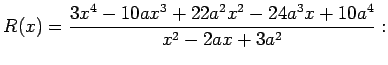
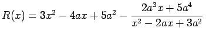

Inhalt Index DeskTop Bronstein

 Arithmetik Elementare Rechenregeln Gebrochenrationale Ausdrücke
Arithmetik Elementare Rechenregeln Gebrochenrationale Ausdrücke


Ein Quotient zweier Polynome mit gemeinsamer Hauptgröße x wird ein echter Bruch genannt, wenn das Polynom im Zähler von niedrigerem Grade ist als das Polynom im Nenner. Im entgegengesetzten Falle spricht man von einem unechten Bruch. Jeder unechte Bruch kann in eine Summe aus einem echten Bruch und einem Polynom zerlegt werden, indem das Zählerpolynom durch das Nennerpolynom dividiert, d.h. der ganzrationale Anteil abgespalten wird.
| Beispiel |
|
Bestimmung des ganzrationalen Anteils von  . |
Der ganzrationale Anteil einer unecht gebrochenrationalen Funktion R(x) wird auch als asymptotische Näherung für R(x) bezeichnet, weil sich R(x) für große Werte von |x| wie dieser Polynomanteil verhält.